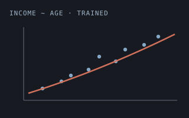
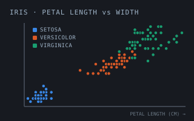
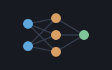
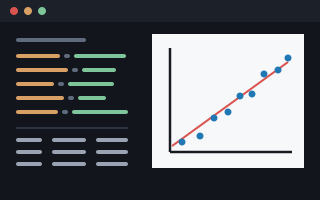

file lets a Shoddy program treat a text file as what it
usually is: a stack of lines. You hand it a path and get back a plain list of
strings, one per line — or you hand it a list of strings and it lays them
down as lines on disk. That's the whole idea. It sits on top of Shoddy's
whole-file builtins (ReadFile,
WriteFile, AppendFile and their guarded twins)
and does the two fiddly bits you'd otherwise do by
hand: splitting the text on newlines, and tidying up the line endings so a
file written on Windows reads back the same as one written anywhere else.
No handles to open or close — you read the file all at once, or
you write it all at once.
A "line" of text ends differently depending on where it grew up, and the reason is mechanical. On a teletype, returning the carriage to the left margin and rolling the paper up a row were two separate physical acts, so the machines were sent two separate characters — carriage return, then line feed — and early operating systems dutifully stored both. The CP/M → DOS → Windows line kept the pair. Unix, in 1969, decided the file should record the idea of a line ending rather than the choreography of a 1960s printer, and stored a single line feed, translating on the way to the device. Fifty years later both conventions are still with us, which is why "the same file" can be a different length on two machines and why half the world's diff noise is invisible characters. This machine takes the Unix view of what a file means — a list of lines, endings nobody's business — and does the tidying at the boundary, so a file written on Windows reads back the same everywhere.
An enormous amount of everyday data is just lines of text: a list of
names, a to-do file, a log, a little config, the output of yesterday's run
that today's run needs to read back. Working with that as one giant string is
awkward — you end up hunting for newlines and worrying about whether the last
line has one. file takes that chore off your hands so you can
think in lines: read a file into a list, loop over it, filter it, sort it,
write it back. Reach for it whenever a program needs to remember something
between runs and that something is naturally a list of lines — and reach for
its bigger cousin isam instead when you need to look
individual records up by key rather than read the whole thing top to
bottom.
The whole machine does the obvious things: read all the lines, write all the lines, or add one line to the end. Because reading and writing each touch the whole file in one go, there's nothing to open and nothing to close — you just call the word and you're done.
Include "file.shoddy"
Def Main()
WriteLines("names.txt", { "ADA", "LIN", "GRACE" })
AppendLine("names.txt", "HEDY")
Let xs = ReadLines("names.txt")
Print(Length(xs)) ' 4
Print(Nth(xs, 1)) ' ADA
Each(xs, Fn(s) => Print(s)) ' ADA LIN GRACE HEDY, one per lineA few things worth knowing:
WriteLines joins your list with newlines and adds a
final one, so the file ends cleanly. ReadLines knows this and
quietly drops that trailing blank, so what you write is what you read back —
no phantom empty line at the end.ReadLines strips out carriage returns (\r) before
splitting, so a file saved with \r\n endings comes back as the
same clean list as one saved with plain \n. You never have to
think about which machine wrote the file."" gives you { }, not a list
containing one empty string — the sensible answer for "no lines here."WriteLines overwrites whatever was there before with your whole
list. AppendLine leaves the file alone and tacks one more line
onto the end — handy for logs, where you want to keep adding without rereading
and rewriting the lot each time.Print and Input, reading and writing files are
effectful — they don't just compute a value, they change what's on disk. Keep
them at the edges of your program, where the file-shuffling happens, and let
the rest stay pure.The eight whole-file words the runtime dispatches — not defined here, documented here
These are not file's Defs. The engine dispatches
them, and a Def whose name is a builtin is refused. They are
listed on this page because file is the machine whose domain they
belong to, and because a reader who opens the files machine looking for
ReadFile should find it rather than be expected to know that
the flat reference exists. They need
no Include — a builtin is callable from any program. The
same eight are documented word for word in
machines/file.shoddy's own header block.
No handles: a text file is read or written whole. Paths resolve against the working directory, and every one of these is effectful.
The Try* words are not duplicates, and the
reason is the shape of error handling in this language. Shoddy has no
catchable errors, so an aborting word cannot be asked "would this work?" — the
asking is the doing, and a failure ends the run. The Try*
forms are how a program survives a path it did not choose, and
FileExists cannot stand in for any of them: a directory reports
False, an existing file that cannot be opened reports True, and a file that is
there when you ask can be locked by the time a delete lands.
| Word | Description |
|---|---|
| ReadFile(path) | The whole file as one string, newlines and all.
Aborts if the path cannot be read. ReadLines below is the one
that splits it. |
| TryReadFile(path) | The same read with the failure
reported rather than fatal: Ok(text), or
Err(why, 0) where why is
CANNOT READ 'path' (…) ending in one of NO SUCH FILE,
IS A DIRECTORY, ACCESS DENIED or
UNREADABLE — a closed set of Shoddy's own, never the host
platform's exception text, which varies by OS and locale. At is
0: a failure to open a file has no position in it. It
answers a Result rather than a Boolean because, unlike
TryWriteFile, it has a payload to carry on success. |
| Word | Description |
|---|---|
| WriteFile(path, s) | Write the string to path,
replacing whatever was there. Aborts on failure. |
| TryWriteFile(path, s) | The same write, answering True on
success rather than aborting. A Boolean and not a Result: a write
has nothing to hand back. |
| AppendFile(path, s) | Add the string to the end of
path, creating the file if it is not there. Aborts on failure,
and has no guarded twin. |
| Word | Description |
|---|---|
| FileExists(path) | Whether there is a readable file at
path. A directory answers False. Not a pre-flight for the
aborting words — see above. |
| DeleteFile(path) | Delete the file at path. A
missing file aborts. |
| TryDeleteFile(path) | The same delete, answering True if the file went and False if it was not there or could not be removed. |
Every word this machine exports
| Word | Description |
|---|---|
| ReadLines(path) | Reads the whole file at path and
hands it back as a list of strings, one per line. Carriage returns
(\r) are stripped first, so Windows-style files read back the
same as any other, and a single trailing newline is dropped. An empty file
gives you an empty list. |
| WriteLines(path, xs) | Writes the list of strings xs
to the file at path, one line each, with a newline after every
line (including the last). Overwrites whatever was there before. |
| AppendLine(path, s) | Adds the single string s as a
new line at the end of the file at path, followed by a newline.
Leaves the existing contents untouched — good for growing a log. |
| User | How | |
|---|---|---|
 | demographics | ReadLines
loads the census rows off disk in the trainer. |
 | iris | ReadLines
loads the flowers off disk in the trainer. |
 | neural | ReadLines
/ WriteLines carry the text model format. |
 | tally | ReadLines reads the golden report the headless suite grades against, line for line. |
| weather-glass | The offline test reads the captured
fixtures and the golden render with ReadLines. |
| Machine | Why | |
|---|---|---|
| str | Split,
Join, Replace and EndsWith for line
and path chores. |